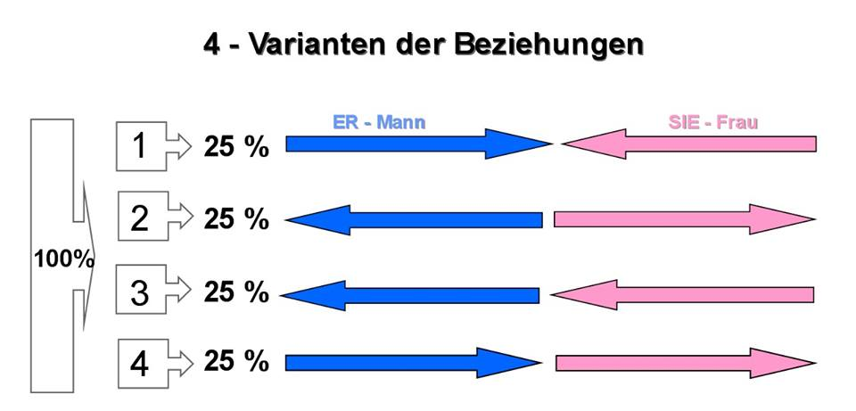
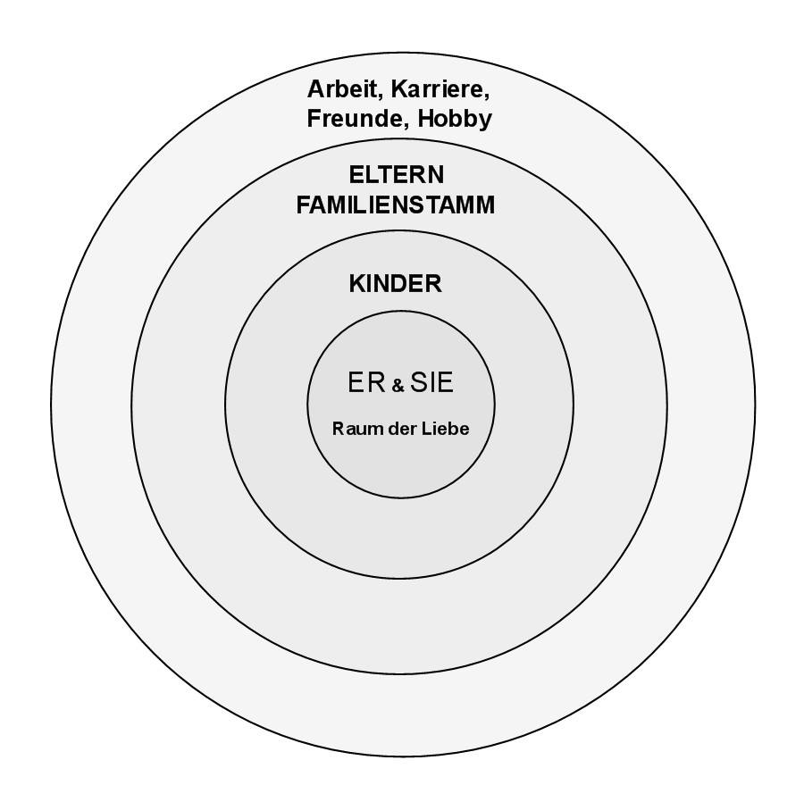

Die Familie und die richtigen Prioritäten.
Die Liebe zwei gebärt den Raum – der häusliche Feuer, Heim. Und das ist der Anfang des schöpferischen Werkes. In diesem Raum gibt es keine Kleinigkeiten, keine Nichtigkeiten. Sehr oft führen falsch aufgestellte Beziehungen zwischen Frau und Mann und die Unfähigkeit ein Heim zu schaffen, zum Zerfall der Familie. Über solche Paare wird dann folgendes gesagt: «Das Alltagsleben hat die Liebe zerstört", dann stellt sich die Frage, ob bei ihnen die Liebe vorhanden war? Wenn die Beziehung von einem Paar nicht auf Grund von Wachstum der Persönlichkeit aufgebaut ist, so wird niemals die Familie – der häusliche Feuer, ein Heim geschaffen sein. Selbst wenn die Familie, wie der materielle Raum geschaffen sein wird, aber ein Umgang voller Teilnahme und Liebe fehlt, so gibt es keine Selbstvervollkommnung für jeden von beiden und so mit ist die Zerstörung unvermeidlich.
Deshalb hängt der Bildung der materiellen Basis der Familie mit einheitlichem Vektor der lebenswichtigen Werte und der harmonischen Wechselbeziehungen zwischen der Frau und dem Mann ab. Wie Antoine de Saint-Exupéry sagte: «Liebe besteht nichtdarin, dass man einander anschaut, sondern dass man gemeinsam in dieselbe Richtung blickt.» Gerade hier stecken viele familiäre Probleme dahinter, da der Unterschied der wertmäßigen Orientierungspunkte die Liebe zerstört. Einige mögen zudenken das sie sich lieben, aber das Leben zeigt auf, dass die lebenswichtigen Werte und die Motivationen bei ihnen verschiedene sind und das sie in verschiedenen Richtungen ziehen, so zerstören sie den familiären Feuer und verschlechtern die Qualität des Lebens für sich und anderen.
In der heutigen, moderner technokratischen Zeit gibt es vier Varianten der Beziehungen zwischen männlichen und weiblichen Beginn (Energien), schauen uns folgende Grafik (Abb. 1) an.
Die erste Variante stehlt eine harmonische Beziehung zwischen Mann und Frau dar. Die beiden leben für einander, sie haben gemeinsame Traditionen, Interessen, gemeinsame Kinder, gemeinsame geistige, seelische und physische Entwicklung.

Abb. 1
Diese werden ihre goldene Hochzeit feiern und im Volksmund sagte man: – „Sie lebten glücklich und sind am selben Tag gestorben.“
In weiteren 75 Prozent herrscht nur eine von beiden Energien vor. In der zweiten Variante leben die männliche Energie für sich und die weibliche Energie auch für sich. Der Mann hat seine eigene Vorlieben und Interessen, z.B. Fußball, Hockey oder Krimis und die Frau hat ihre eigene Interessen, z.B. Eiskunstlauf, Liebesromane, u.s.w. Sie haben in der Praktik nichts Gemeinsames in ihrem Leben.
In der dritten Variante nimmt die Frau eine Opferrolle an, sie lebt nur für ihren Mann. Alle Politiker, Unternehmer haben ihre Stellung dank ihren Frauen, Ehefrauen, Gefährtinnen erreicht. Die Frau opfert ihre weibliche Energie an die männliche Energie und so mit potenziert sie diese.
In der vierten Variante ist es umgekehrt, der Mann opfert seine männliche Energie an die Frau, d.h. der Mann lebt nur für diese Frau.
In den restlichen Varianten 2, 3 und 4 herrscht eine Energie oder besser gesagt Mono - Energie. Von dem Wort „Mono“ abgeleitet von DäMon, DäMonismus – Es ist nur eine Art an der Energie vorhanden. Es kommt oft vor das in den letzten drei Varianten die Untreue eine Normalität ist und diese Familien zerbrechen.
Damit wir die erste Variante der Beziehung, Harmonie zwischen männlich und weiblich erreichen können, sollen wir die richtigen Prioritäten in der Familie aufbauen. (Abb. 3)

Abb. 2
Der erste Kreis - ER & SIE im Raum der Liebe, das Heimfeuer
Wir betrachten das System derrichtigen Familien Prioritäten des Menschen, deshalb wird der erste Kreis wird unvollständig sich erweisen, wenn darin kein Platz für den geliebten Menschen gibt. Füllen Sie diesen Platz nichts mit etwas oder jemanden aus! Nicht mit den Kindern, der Arbeit, dem Studium, dem Geld, den Eltern, den Freunden oder den Lieblingstieren.
Ziemlich oft wird dieser Platz, der für die zweite Hälfte vorbestimmt ist, mit den Kindern, der Arbeit, den Eltern, dem Lehrer und sogar vom Tier besetzt! Natürlich wird der Mensch in diesem Fall, egal wie er strampelt, oft einsam sein und es wird schwierig die ganze Fülle des Glückes zu haben. Nur das gut aufgebaute und mit der Liebe gefühlte Zentrum „ER & SIE“ wird das Erwünschte erreichen zu können, zu lassen. Die Liebe des Pärchens ist das wertvollste im Universum! Es ist die Grundlage des Lebens und man darf sie nicht teilen oder unter ihnen einen als Wichtigsten wählen – sie sind Gleichwertig.
Der zweite Kreis - Kinder
Der Mann und die Frau, die ein Paar bilden und Kinder gebären. Es ist wichtig, dass das Kind - das Kind der Liebe ist. Er ist dann weniger krank, weil darin die hohe Energie der Liebe reingelegt und gespeichert ist. Wenn die Kinder in der vollwertigen Familie aufwachsen, wo die Prioritäten der lebenswichtigen Werten richtig verteilt sind, wo die Achtung der Eltern unter einander vorhanden ist, so behalten die Kinder aus der persönlichen praktischen Erfahrung die Werte der Eltern und ihre Weltanschauung. Es wird für sie die stärkste Immunität bei den Schwierigkeiten des Lebens und einem Beispiel für die Nachahmung sein. Sie bauen das Leben nach diesem Muster auf. So geben die Eltern das Glück, die Liebe und die Qualität des Lebens den Kindern durch eigen persönliches Wachstum weiter. Die Kinder in solchen Familien wachsen glücklich mit dem Teilchen der Elternliebe und der Fähigkeit zum schöpferischen Denken auf.
Gerade mit ihrem Beispiel des glücklichen, ausgefüllten Lebens können Sie im Bewusstsein des Kindes des Kornes des zukünftigen Wohlergehens und der festen gegenseitigen Beziehung legen.
Der dritte Kreis – Stamm, Eltern und Verwandten
Ohne Wurzeln, ohne Liebe der Eltern existiert der Mensch, wie das geschrägte Gras. Deshalb ist es sehr wichtig, die Verbindung mit dem Familienstamm nicht zu verlieren. In diesem Fall wird der Mensch fest auf der Erde, wie der mächtige Baum stehen. Der Mensch, der seine die Eltern nicht liebt, sägt den Ast auf dem er selbst sitzt ab und verliert die geistig energetische Verbindung mit dem Ahnen. Die gute Beziehung mit den Eltern und den Verwandten sind die sicheren Wurzeln, die dem Menschen festen Halt auf den Beinen erlauben. Die oberflächliche Beziehung zu den Eltern, die Unaufmerksamkeit, Fürsorgelosigkeit, ist gleich dem Entzug der Lebenskraft und der Schutzes, mit den wir unseren Leben aufbauen.
Der vierte Kreis - Arbeit, Karriere, Freunde, Hobby
Die Mehrheit der Menschen geben dieser Priorität im Leben wesentlich mehr Zeit und Kraft ab und weisen die Liebe zurück. Ziemlich oft erscheint die Arbeit auf den Vordergrund. In diesem Fall kann der Mensch die großen Erfolge erreichen, aber dabei können sie die Gesundheit, die Familie, die Kinder und sogar das Leben verlieren. Es gibt sogar ein solchen Ausdruck: «In der Arbeit verbrannt" ist gerade über solche Menschen die rede.
Gerade an die vierte Stelle kommt unsere alltägliche Tätigkeit, die Arbeit, die Karriere, die Freunde, die Hobbys, die öffentlichen Interessen und die Haustiere, erst nach der Liebe zur Gattin(en) und den Kindern und nach den Eltern. Gerade in diesem Fall wird die schöpferische Realisierung, Hand in Hand mit dem Erfolg im Leben gehen.
Bei solcher Aufstellung der Prioritäten formt und entwickelt sich das glückliche Schicksal.